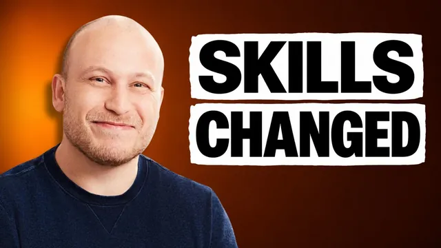

앤트로픽은 클로드 스킬을 진짜 이렇게 만듭니다

원본 영상 보기 →
- 스킬은 '설명'이 아니라 '시연'에서 나온다
- 컨텍스트 창 관리가 곧 스킬 품질
- 스킬은 5~10번 고쳐야 쓸 만해진다
한 줄 요약
Ben이 Anthropic의 Claude 스킬 가이드와 모범 사례를 뜯어보고 업무 자동화가 실제로 안정적으로 돌아가는 스킬을 만드는 8가지 방법을 정리했어요. 한마디로 "설명하지 말고 한 번 직접 해 보고 나서 스킬로 만들라"는 거예요.
전체 내용 정리
계획부터 세우지 말고 일을 한 번 끝낸 다음 스킬로 만드세요
Ben은 세 번 창업했고 AI 에이전시와 전문가·사업가를 위한 대형 AI 커뮤니티를 운영하는 사람이에요. 그가 꼽은 첫 번째이자 가장 중요한 팁은 스킬을 만들 때 미리 계획하거나 긴 프롬프트를 쓰지 말라는 거예요. Ben 자신도 예전엔 자동화할 작업을 계획하고 Claude에게 자세한 프롬프트를 줘서 스킬을 만들었다고 해요.
그런데 Anthropic 가이드는 스킬을 만들기 전에 먼저 작업을 끝내라고 명시적으로 안내해요. 작업을 하다 보면 맥락을 자연스럽게 주고 선호를 설명하고 절차적 지식(일을 어떤 순서로 처리하는지에 대한 노하우)을 나누게 되거든요. Claude와 함께 작업을 성공적으로 마쳤다면 채팅 창의 "스킬로 만들기" 버튼을 누르거나 "이걸 스킬로 만들어 주세요"라고 말하면 끝이에요.
이유는 사람과 같아요. 머릿속 과정을 말로 설명하긴 어렵지만 직접 해 보이면 훨씬 쉽죠.
Ben은 새로 나온 "스킬 기록" 기능이 지금 Claude에서 가장 과소평가된 기능 중 하나라고 봐요. 작업을 직접 하면서 무엇을 왜 하는지 말하기만 하면, Claude가 화면과 클릭을 캡처하고 음성 녹취를 읽어 의도를 파악한 뒤, 멈추는 순간 전체 과정을 스킬로 바꿔 줘요. Ben은 이 방식으로 이메일 분류(triage) 스킬을 만들었고 이걸 기본 스킬 구축 방법으로 강력히 추천합니다.
스킬 하나에 한 가지 일만 맡기세요
두 번째 원칙은 특정 작업에 집중한 스킬을 만드는 거예요. Ben이 보기에 가장 흔한 실수는 스킬을 너무 넓게 잡거나 한 스킬에 너무 많은 일을 담는 것이에요. Anthropic의 심층 가이드도 가장 효과적인 스킬 제작자는 확장하기 전에 한 작업에 집중해 반복 개선한다고 말해요. 모범 사례 가이드 역시 범위를 작게 유지하고 워크플로우마다 별도 스킬을 만들라고 강조하죠.
그럼 너무 많이 담았는지는 어떻게 알까요? Ben의 에이전시는 자동화하려는 전체 프로세스를 펼쳐 놓고 그중 가장 작은 부분부터 가치를 만드는 스킬을 만들어요. 예를 들어 리서치 스킬 하나만으로도 이미 가치가 있죠. 그게 잘 돌아가면 거기서 확장하거나, 더 나은 방법으로 나머지 단계를 별도 스킬로 나눠 같은 채팅에서 필요할 때마다 실행해요.
덤으로 스킬 파일이 작아지면 컨텍스트 창이 깔끔해져서 AI 성능도 좋아진다고 해요.
스킬은 완성품이 아니라 계속 고쳐 쓰는 업무 프로세스예요
세 번째는 스킬을 완성된 파일이 아니라 비즈니스 프로세스처럼 다루는 거예요. Anthropic 가이드는 스킬을 살아있는 문서라고 불러요. 상황이 바뀌거나 새 예외가 생기면 업데이트해야 하죠. Anthropic 블로그에도 최고의 스킬은 몇 줄로 시작해서, Claude가 새 예외를 만날 때마다 사람들이 내용을 덧붙이며 좋아졌다는 얘기가 나와요.
Ben도 비슷했다고 해요. 그가 만든 최고의 스킬들도 최소 5~10번은 고쳤고 어떤 건 그만큼 반복한 뒤에야 쓸 만해졌대요.
Anthropic은 스킬을 만들고 개선하는 채팅과 테스트하는 채팅을 따로 쓰라고 권해요. Claude A와 첫 버전을 만들고 Claude B로 실제 워크플로우에서 돌려 보고 오류가 나면 Claude A에게 알려 함께 고치는 식이죠. 그러면 한쪽에 치우치지 않고 각자 맡은 일에 집중할 수 있어요.
예외가 자주 생긴다면 자기 개선 역할을 넣을 수도 있어요. "내가 새 업데이트를 주거나 수정·오류를 지적할 때마다 스킬에 새 규칙이 자동으로 반영되도록 자기 개선 역할을 추가해 주세요" 같은 지시 한 줄이면 됩니다.
입력·출력 예시를 넣으세요, 카피라이팅이면 많이
네 번째는 당연해 보이지만 많은 사람이 안 하는 것, 입력·출력 예시 추가예요. 예시는 설명만으로는 전하기 어려운 스타일과 디테일 수준을 Claude에게 훨씬 분명하게 전해요. 출력 형식, 어조, 구조를 정하는 가장 확실한 방법 중 하나죠.
Ben의 경험으로는 디자인, 카피라이팅, 크리에이티브 스킬에서 특히 중요해요. 최소 3~5개의 좋은 예시를 넣는 게 좋고 카피라이팅은 최대 20개까지 넣으면 결과가 훨씬 좋아진다고 해요. 여기서도 기준은 "설명하지 말고 보여주기"예요.
아직 좋은 예시가 없다면 다른 사람 것을 가져오거나, 좋은 결과물을 자동으로 쌓는 역할을 스킬에 넣으면 돼요. 결과물을 고치거나 특히 마음에 드는 게 나올 때마다 "이걸 스킬에 영구 저장할까요?"라고 묻고 '예'라고 하면 예시로 저장하게 하는 방식이에요.
점진적 공개: 필요한 단계에서 필요한 파일만 읽게 하세요
다섯 번째는 점진적 공개(progressive disclosure)예요. Anthropic 엔지니어링 블로그는 이걸 에이전트 스킬을 유연하고 확장 가능하게 만드는 핵심 설계 원칙이라고 불러요. 덕분에 스킬에 담을 수 있는 컨텍스트 양은 사실상 무제한이 되지만 제대로 적용하지 않으면 오히려 성능이 떨어져요. Ben은 Anthropic의 스킬 생성기조차 이 원칙을 제대로 적용하지 않는 경우가 있다고 봐요.
스킬은 따라야 할 과정을 적은 skill.md 파일과, 추가 자료를 담은 참조(reference) 폴더로 구성될 수 있어요. 예를 들어 Ben의 뉴스레터 스킬에는 본인 배경, 회사 소개, ICP(이상적인 고객 프로필), 말투, 예시 같은 파일이 들어 있죠.
점진적 공개란 이 파일들을 처음부터 다 읽지 않고 필요한 단계에서만 읽게 하는 것이에요. 한 번에 다 불러오면 컨텍스트 창이 복잡해지고 Claude가 마지막 단계쯤엔 앞 내용을 잊기 시작하거든요. 그래서 Ben의 뉴스레터 스킬은 단계마다 "이 단계를 실행하기 전에 이 파일을 읽어라"를 명시해 둬요.
리서치 단계는 하위 에이전트에게 맡기세요
여섯 번째는 조사·연결 단계에서 하위 에이전트 사용을 강제하는 거예요. Anthropic은 컨텍스트 창을 기본적인 제약 조건이라고 명시해요.
많은 스킬이 비슷한 패턴을 따라요. 인터넷이나 소프트웨어에서 데이터를 가져오고 해석해서 쓸 만한 결과를 내는 거죠. 데이터 분석 스킬은 데이터를 뽑아 보고서나 대시보드를 만들고 아이디어 발상 스킬은 조사하고 걸러서 제안을 내요.
문제는 첫 단계에서 쓰는 MCP나 커넥터가 토큰을 많이 먹는다는 거예요. 컨텍스트 창이 처음부터 차 버리면, 정작 가장 중요한 해석 단계에서 Claude의 성능이 크게 떨어져요. 하위 에이전트가 조사를 하고 요약만 메인 에이전트에 넘기면 이 문제를 피할 수 있죠.
Claude가 알아서 그렇게 할 때도 있지만 안 그럴 때가 많아요. Ben의 영상 제목 아이디어 스킬은 YouTube에서 성과 좋은 제목을 먼저 조사하는데, 모든 연결 호출을 하위 에이전트 안에서 돌리도록 지침을 넣어 뒀다고 해요.
체크포인트마다 여러 버전을 받으세요
일곱 번째는 스킬이 단계마다 여러 변형을 내게 하는 거예요. 카피라이팅이나 디자인 스킬은 제대로 작동해도 각도나 표현, 방향이 마음에 안 들어 계속 고치게 되잖아요. 선택지가 많으면 그중 하나가 맞는 방향일 확률이 높고 고쳐도 고칠 부분이 줄어요.
Ben의 뉴스레터 스킬은 첫 단계에서 여러 각도와 방향을 제안해요. 하나를 고르면 그 관점으로 개요 세 가지가 나오고 또 하나를 골라 조금 손보는 식이죠. 제목부터 본문까지 모든 단계에서 이렇게 하니 워크플로우가 훨씬 빨라지고 모델을 좋은 방향으로 이끌 수 있다고 해요.
이건 Anthropic 모범 사례 가이드에 있는 내용은 아니에요. 다만 Anthropic이 자체 스킬을 많이 설계할 때 쓴 방식이고 Ben도 거기서 아이디어를 얻었다고 해요.
원치 않는 자동 발동은 한 줄로 끌 수 있어요
마지막은 자동 발동을 막는 거예요. 스킬은 슬래시 명령어로 부를 수도 있지만 Claude가 스킬 설명을 읽고 이 작업에 맞다고 판단하면 스스로 발동하기도 해요. 그런데 Ben을 포함해 많은 사람이 어차피 슬래시 명령어로만 스킬을 쓰는데, 원치 않는 상황에서 모델이 스킬을 불러오는 일이 종종 생겨요.
해결법은 간단해요. 스킬 프런트매터(파일 맨 위 설정 영역)에 disable-model-invocation(모델 호출 비활성화)을 true로 넣으면 돼요. Ben의 LinkedIn 작가 스킬 맨 위에도 이 줄이 있어요. 이러면 Claude가 스스로 호출하진 못하지만 슬래시로는 계속 쓸 수 있죠.
덤으로 새 채팅마다 스킬 설명이 로드되지 않아 컨텍스트 창도 더 깔끔해져요.
핵심 인사이트
- 스킬은 '설명'이 아니라 '시연'에서 나온다: 머릿속 과정을 프롬프트로 옮기는 것보다 한 번 같이 일하고 그걸 스킬로 굳히는 게 훨씬 정확해요. 스킬 기록 기능은 이 과정을 거의 자동으로 만들어 줘요.
- 컨텍스트 창 관리가 곧 스킬 품질: 작은 스킬, 점진적 공개, 리서치용 하위 에이전트, 자동 발동 끄기는 모두 결국 Claude가 핵심 단계에서 쓸 컨텍스트를 아끼는 방법이에요. 결과가 들쭉날쭉하다면 프롬프트보다 컨텍스트 구조를 먼저 의심해 볼 만해요.
- 스킬은 5~10번 고쳐야 쓸 만해진다: 처음부터 완벽한 스킬은 드물어요. 만드는 채팅과 테스트하는 채팅을 나누고 자기 개선 역할로 수정 사항이 자동으로 쌓이게 하면 반복 비용이 크게 줄어요.
오늘 당장 해볼 것
- 이번 주에 반복한 업무 하나(예: 문의 메일 답장, 견적서 초안)를 Claude와 처음부터 끝까지 같이 처리한 뒤 "이걸 스킬로 만들어 주세요"라고 해 보세요. 미리 짠 프롬프트로 만든 스킬과 결과를 비교하면 차이가 바로 보여요.
- 이미 쓰는 스킬이 있다면 skill.md를 열어 한 스킬이 여러 일을 하고 있지 않은지 확인해 보세요. 리서치·작성·검수처럼 단계가 섞여 있다면 따로 나누는 것만으로도 결과가 안정됩니다.
- 슬래시로만 쓰는 스킬의 프런트매터에
disable-model-invocation: true를 한 줄 추가해 보세요. 엉뚱한 순간에 스킬이 끼어드는 일이 줄고 컨텍스트도 가벼워져요.